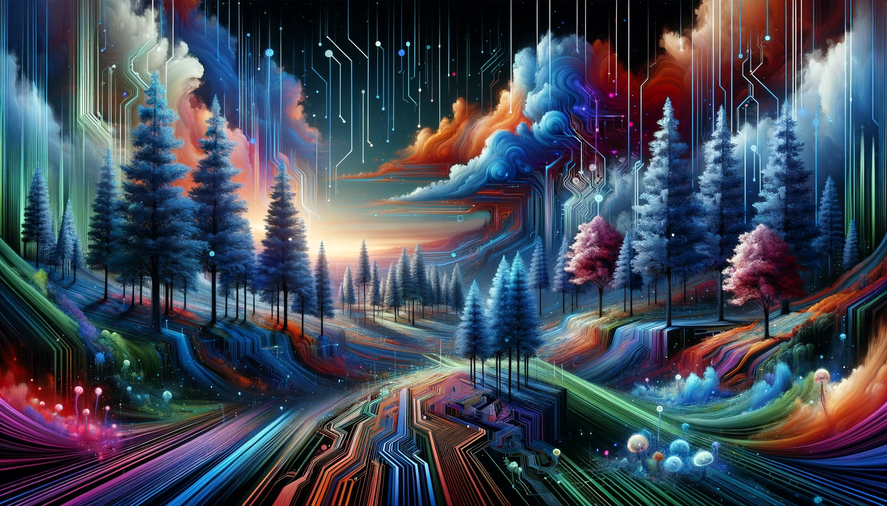

Artistas Contemporáneos
Sofia Altamira
Biografía:
Sofia Altamira es una artista contemporánea nacida en 1980 en Barcelona, España. Su obra se centra en la exploración de la identidad y el espacio urbano a través de instalaciones y esculturas. Sofia utiliza materiales reciclados y tecnología para crear piezas interactivas que invitan a la reflexión y participación del público.
Obras Destacadas:
- "Urban Echoes": Una instalación interactiva que utiliza sensores de movimiento para proyectar sonidos y luces en respuesta a la presencia de los espectadores, representando la vibrante vida urbana.
- "Fragmented Reflections": Una serie de esculturas hechas de espejos rotos y materiales reciclados, que exploran la fragmentación de la identidad en la sociedad moderna.
Marcus Delacroix
Biografía:
Marcus Delacroix, nacido en 1975 en Nueva York, Estados Unidos, es conocido por sus grandes murales y pinturas abstractas. Su trabajo se caracteriza por el uso audaz del color y las formas geométricas, influenciado por el arte callejero y el expresionismo abstracto.
Obras Destacadas:
- "Chromatic Symphony": Un mural de gran tamaño que combina formas geométricas y colores vibrantes, creando una sinfonía visual que celebra la diversidad cultural.
- "Echoes of Chaos": Una pintura abstracta que utiliza capas de colores y texturas para representar el caos y la belleza de la vida urbana.
Anika Petrov
Biografía:
Anika Petrov es una artista rusa nacida en 1988 en San Petersburgo. Su obra abarca desde la fotografía hasta el arte digital, con un enfoque en la relación entre la naturaleza y la tecnología. Anika crea paisajes digitales y fotografías manipuladas que cuestionan la percepción de la realidad.
Obras Destacadas:
- "Digital Forest": Una serie de paisajes digitales que fusionan elementos naturales y tecnológicos, creando mundos imaginarios que exploran el impacto de la tecnología en la naturaleza.
- "Virtual Eden": Fotografías manipuladas que representan jardines y paisajes paradisíacos, creados a partir de software de inteligencia artificial y técnicas de edición digital.

Li Wei
Biografía:
Li Wei, nacido en 1985 en Shanghái, China, es un artista contemporáneo conocido por sus esculturas y performances que desafían la gravedad y las leyes físicas. Su trabajo combina la precisión técnica con un sentido de juego y asombro, invitando a los espectadores a cuestionar su percepción de la realidad.
Obras Destacadas:
- "Gravity Defied": Una serie de esculturas que parecen flotar en el aire, desafiando la gravedad y creando una sensación de ingravidez y libertad.
- "Suspended Reality": Una performance interactiva en la que los espectadores son invitados a participar en instalaciones que desafían las leyes físicas, creando una experiencia inmersiva y surrealista.